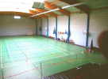
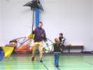
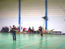
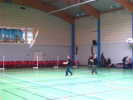
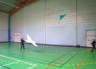
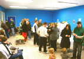
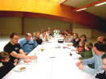
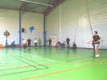
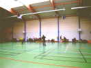
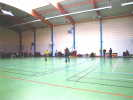

Bertry Indoor, deuxième édition ! Une seule journée de spectacle cette année, mais on pouvait venir s'entraîner le samedi. Malheureusement, suite à une incompréhension, je ne suis venu que le dimanche... Donc le reportage sera court, d'autant que, cette année, je tendrai à aller dans ce sens, la rédaction me prenant trop de temps...
Les monofils sont de plus en plus nombreux, malheureusement le plus souvent au bout de cannes à pêches... Je sais, c'est plus difficile sans, mais ça laisse une grande marge de progression... La canne, c'est bien pour les enfants qui peuvent voler tout de suite !
Maintenant, des champions du pilotable de Moissy-Cramayel : Bruno et Maxime ! Leur travail en paire n'est pas mal, même s'il y a trop souvent des accrochages... Pas si facile, de tourner à deux en indoor !
Ils ont des Amazing, de grands cerfs-volants très légers assez lents, idéaux pour l'indoor !
J'ai amené mes cerfs-volants habituels, je n'ai rien construit cet hiver... J'ai consacré mon temps à... l'horlogerie : Comtoise, carillon, Liégeoise, mouvements de Paris... Démontages, nettoyages, réfection de pièces, remontages... Si vous avez de vieilles pendules qui traînent, apportez-les moi, je verrai ce que je peux faire !
A 1 h, nous montons d'un étage dans cette fameuse salle VIP, pour un apéritif-discussion ! On peut voir à gauche la paroi vitrée d'observation depuis cette vigie !
Ensuite, nous montons dans la salle du haut, pas question de salir le gymnase tout propre ! Ca permet d'admirer de près la belle charpente en bois d'une si grande portée...
L'après-midi, spectacle, avec d'abord des jeux opposant 2 équipes A et B : ici, une course en faisant rebondir une balle sur une raquette de ping-pong... sans laisser tomber le cerf-volant, bien sûr ! A la fin, évidemment, les 2 équipes sont ex-aequo...
Entre les concours, il y aura aussi des présentations classiques. Ici, Dominique Miquet en paire avec son fils... et des Aerobes sur cannes. Florent commence à bien se débrouiller, à force de fréquenter le milieu !
Bien sûr, il y a quelquefois des accrochages, mais ça arrive même à des pros !